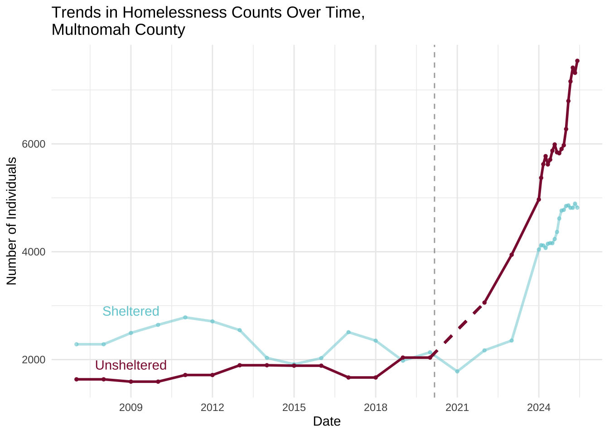

Social Determinants of Behavioral Health
These measures are often considered causal or impactful because they reflect underlying social and environmental factors that drive behavioral health outcomes.
Rate of Unstable Housing and Homelessness
This is a crucial measure for Multnomah County, as it’s a known driver of both mental health and substance use issues. Homelessness can lead to increased stress, trauma, and a lack of access to care, while substance use and mental illness can contribute to housing instability, creating a vicious cycle.
Unstable housing can be measured in several ways, often by combining multiple indicators to get a more complete picture. The key is to move from a single metric to a continuum of housing instability.
Homelessness (Unsheltered and Sheltered)
This is the most visible form of unstable housing.
Unsheltered
People living on the streets, in vehicles, or in other places not meant for human habitation.
Source we have: https://www.huduser.gov/portal/datasets/ahar.html; https://hsd.multco.us/data-dashboard/
Source we’d like: the ‘By Name List of people experiencing homelessness’, Multnomah County Homeless Services Dept.
Date range available: 2007-2023 (yearly), 2024-2025 (monthly)
Date | Unsheltered
Count |
|---|
2007-01-01 | 1,634 |
2008-01-01 | 1,634 |
2009-01-01 | 1,591 |
2010-01-01 | 1,591 |
2011-01-01 | 1,714 |
2012-01-01 | 1,714 |
2013-01-01 | 1,895 |
2014-01-01 | 1,895 |
2015-01-01 | 1,887 |
2016-01-01 | 1,887 |
2017-01-01 | 1,668 |
2018-01-01 | 1,668 |
2019-01-01 | 2,037 |
2020-01-01 | 2,037 |
2021-01-01 |
|
2022-01-01 | 3,057 |
2023-01-01 | 3,944 |
2024-01-01 | 4,969 |
2024-02-01 | 5,371 |
2024-03-01 | 5,623 |
2024-04-01 | 5,773 |
2024-05-01 | 5,619 |
2024-06-01 | 5,708 |
2024-07-01 | 5,874 |
2024-08-01 | 5,989 |
2024-09-01 | 5,844 |
2024-10-01 | 5,827 |
2024-11-01 | 5,906 |
2024-12-01 | 5,975 |
2025-01-01 | 6,275 |
2025-02-01 | 6,796 |
2025-03-01 | 7,159 |
2025-04-01 | 7,414 |
2025-05-01 | 7,318 |
2025-06-01 | 7,541 |
Housing Cost Burden
A household is considered “cost-burdened” if it spends more than 30% of its income on housing costs, including rent/mortgage and utilities. This can be further broken down into severely cost-burdened if the amount exceeds 50%. This is a huge indicator of housing insecurity.
“Doubled-Up” Households
This refers to people living with friends or family because they have no other place to go. This is a hidden form of homelessness and a major sign of housing instability.
Residential Instability
This is measured by the number of times a person or family moves within a specific period (e.g., two or more moves in a year). It indicates a lack of stable residence.
Eviction Rates
The number of formal evictions filed in the court system is a direct measure of housing loss and a strong predictor of future homelessness.
Unemployment Rate
High unemployment is directly correlated with increased rates of depression, anxiety, and substance use disorders. It’s an economic indicator with significant behavioral health consequences.
Access to Healthcare (Mental Health and Substance Use Treatment)
This isn’t just about the number of clinics but also about patient-to-provider ratios, geographic distribution of services, and the number of people with health insurance. Audits have shown that Multnomah County’s ability to serve those with serious mental illness is limited, making this an especially impactful measure.
Community Social Cohesion and Support Networks
This can be measured through surveys or community engagement data. A strong sense of community and social support can act as a protective factor against behavioral health crises.
Adverse Childhood Experiences (ACEs) Score
This score measures a range of childhood traumas. High ACE scores in a population are a strong predictor of poor behavioral and physical health outcomes later in life. This is a foundational, causal measure for long-term health.
Outcome-based Behavorial Health Measures
These measures reflect the results or consequences of behavioral health issues and the effectiveness of the system in place.
Fatal Overdose Rate (by substance, e.g., fentanyl)
This is a critical and highly-impactful measure for Multnomah County, where fentanyl-related deaths have seen a dramatic increase. It directly reflects the severity of the opioid crisis.
Suicide Rates (by age group, gender, and race)
Suicide is a tragic and direct outcome of severe behavioral health distress. Analyzing the data by specific demographics can help identify the most vulnerable populations.
Emergency Department Visits for Behavioral Health Crises
This measure indicates the number of people in acute distress who are not being served by the regular, community-based mental health system. A high rate suggests a fragmented or insufficient system of care.
Substance Use Disorder Treatment Admission and Completion Rates
This is a key measure of the system’s effectiveness. High admission rates show a need for services, while low completion rates can point to barriers in treatment.
Process and Systems-based Measures
These measures evaluate the functioning of the behavioral health system itself, focusing on how services are delivered and used.
Wait Times for Behavioral Health Appointments
Long wait times are a significant barrier to care. This measure directly reflects the accessibility and capacity of the behavioral health system.
Patient/Consumer Satisfaction with Behavioral Health Services
Surveying individuals who use the system can provide valuable qualitative and quantitative feedback on the quality, cultural responsiveness, and effectiveness of care.
Retention Rates in Behavioral Health Programs
This measure tracks how long people stay engaged in treatment. High retention rates suggest that programs are effective and that clients feel supported.
Integration of Behavioral and Physical Health Care
This measures the extent to which mental health, substance use, and physical health services are coordinated. A high level of integration leads to better overall health outcomes. It can be measured by looking at metrics like the number of individuals with co-occurring mental and physical health conditions who are seen by integrated care teams.
Social Determinants of Behavioral Health
These measures are often considered causal or impactful because they reflect underlying social and environmental factors that drive behavioral health outcomes.
Rate of Unstable Housing and Homelessness
This is a crucial measure for Multnomah County, as it’s a known driver of both mental health and substance use issues. Homelessness can lead to increased stress, trauma, and a lack of access to care, while substance use and mental illness can contribute to housing instability, creating a vicious cycle.
Unstable housing can be measured in several ways, often by combining multiple indicators to get a more complete picture. The key is to move from a single metric to a continuum of housing instability.
Homelessness (Unsheltered and Sheltered)
This is the most visible form of unstable housing.
Unsheltered
People living on the streets, in vehicles, or in other places not meant for human habitation.
Source we have: https://www.huduser.gov/portal/datasets/ahar.html; https://hsd.multco.us/data-dashboard/
Source we’d like: the ‘By Name List of people experiencing homelessness’, Multnomah County Homeless Services Dept.
Date range available: 2007-2023 (yearly), 2024-2025 (monthly)
Date
Unsheltered
Count
2007-01-01
1,634
2008-01-01
1,634
2009-01-01
1,591
2010-01-01
1,591
2011-01-01
1,714
2012-01-01
1,714
2013-01-01
1,895
2014-01-01
1,895
2015-01-01
1,887
2016-01-01
1,887
2017-01-01
1,668
2018-01-01
1,668
2019-01-01
2,037
2020-01-01
2,037
2021-01-01
2022-01-01
3,057
2023-01-01
3,944
2024-01-01
4,969
2024-02-01
5,371
2024-03-01
5,623
2024-04-01
5,773
2024-05-01
5,619
2024-06-01
5,708
2024-07-01
5,874
2024-08-01
5,989
2024-09-01
5,844
2024-10-01
5,827
2024-11-01
5,906
2024-12-01
5,975
2025-01-01
6,275
2025-02-01
6,796
2025-03-01
7,159
2025-04-01
7,414
2025-05-01
7,318
2025-06-01
7,541

Sheltered
People in emergency shelters, transitional housing, or domestic violence shelters.
Source: https://www.huduser.gov/portal/datasets/ahar.html; https://hsd.multco.us/data-dashboard/
Source we’d like: the ‘By Name List of people experiencing homelessness’, Multnomah County Homeless Services Dept.
Date range available: 2007-2023 (yearly), 2024-2025 (monthly)
Housing Cost Burden
A household is considered “cost-burdened” if it spends more than 30% of its income on housing costs, including rent/mortgage and utilities. This can be further broken down into severely cost-burdened if the amount exceeds 50%. This is a huge indicator of housing insecurity.
“Doubled-Up” Households
This refers to people living with friends or family because they have no other place to go. This is a hidden form of homelessness and a major sign of housing instability.
Residential Instability
This is measured by the number of times a person or family moves within a specific period (e.g., two or more moves in a year). It indicates a lack of stable residence.
Eviction Rates
The number of formal evictions filed in the court system is a direct measure of housing loss and a strong predictor of future homelessness.
Unemployment Rate
High unemployment is directly correlated with increased rates of depression, anxiety, and substance use disorders. It’s an economic indicator with significant behavioral health consequences.
Access to Healthcare (Mental Health and Substance Use Treatment)
This isn’t just about the number of clinics but also about patient-to-provider ratios, geographic distribution of services, and the number of people with health insurance. Audits have shown that Multnomah County’s ability to serve those with serious mental illness is limited, making this an especially impactful measure.
Community Social Cohesion and Support Networks
This can be measured through surveys or community engagement data. A strong sense of community and social support can act as a protective factor against behavioral health crises.
Adverse Childhood Experiences (ACEs) Score
This score measures a range of childhood traumas. High ACE scores in a population are a strong predictor of poor behavioral and physical health outcomes later in life. This is a foundational, causal measure for long-term health.